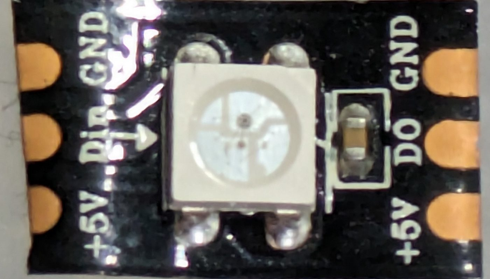
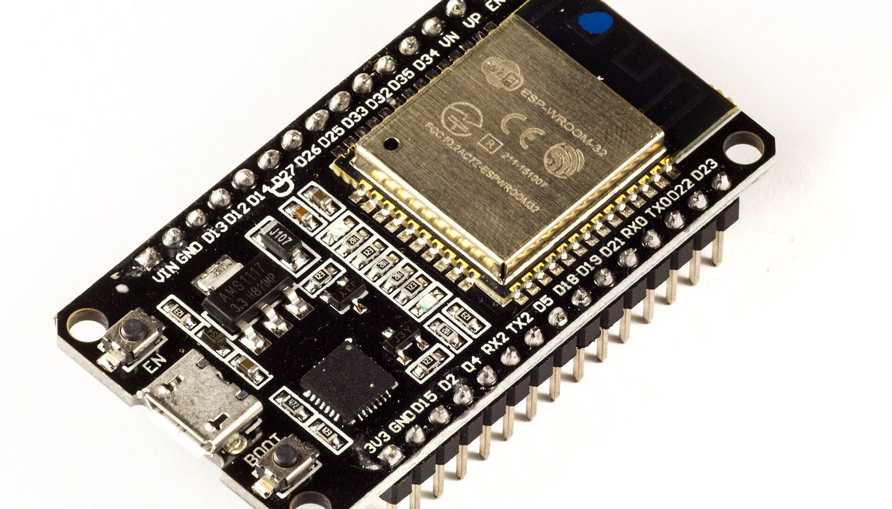

Éclairage LED · aucun lien affilié sur cette page · sources relevées le 2 oct. 2026
Éclairage LED adressable DIY : un ESP32 à 14,40 € et un ruban WS2812B à partir de 10,99 € pour piloter chaque LED, sans cloud — et ce que les tutoriels ne disent pas

WLED est un firmware libre qui transforme un ESP32 à 14,40 € et un ruban WS2812B à partir de 10,99 € les 5 m en éclairage où chaque LED est pilotable individuellement, en WiFi, sans compte et sans nuage. Mais le discours habituel cache l'essentiel : un ruban connecté à application coûte le même prix et fait la même lumière. Ce que vous payez en plus, ce n'est pas la lumière — c'est le contrôle, et le montage.
Aucun lien affilié sur cette page — voir comment ça marche Prix lus le 2 oct. 2026
En bref
- Le projet est libre et massif. Le dépôt public wled/WLED comptait 18 737 étoiles et 4 370 forks le 2 octobre 2026, sous licence EUPL-1.2 — usage commercial permis.
- Deux pièces suffisent : un ESP32-WROOM-32 (14,40 € chez Kubii, vérifié le 2 oct. 2026) et un ruban adressable WS2812B de 5 m (à partir de 10,99 € TTC chez un revendeur domotique français, vérifié le 2 oct. 2026 ; 12,62 € chez Lextronic pour 150 LED) — soit 25,39 € à 27,02 € de pièces, hors alimentation et hors port.
- La vérité de marché : le ruban n'est pas le poste qui creuse l'écart. Un ruban connecté à application et télécommande se relève autour de 10,99 € livré (Amazon.fr, notre veille du 2 oct. 2026) — le même prix qu'un ruban adressable. Ce que vous payez en plus chez nous, c'est la carte, l'alimentation et votre soirée de montage.
- Ce que vous achetez en plus : l'adressabilité LED par LED, les effets, le contrôle local sans compte, et l'intégration domotique. Le même type d'éclairage en marque est à 132,02 € soldé (référence à 239,99 €, notre veille du 2 oct. 2026) : c'est là que l'écart est réel.
- Ce qui n'est pas chiffré : le prix de l'alimentation 5 V. Nous ne l'avons pas relevé, donc nous ne l'estimons pas — mais le ruban cité est donné pour 9 A au maximum par son distributeur.
De quoi on parle exactement
Un « ruban adressable » n'est pas un ruban coloré. Sur un ruban classique, toute la bande affiche la même couleur à un instant donné. Sur un ruban adressable (ici un WS2812B), chaque puce contient son propre contrôleur : la LED n° 7 peut être rouge pendant que la n° 8 est bleue, et vous décidez de la couleur, de l'intensité et de l'animation de chacune.
Il manque une pièce pour commander tout ça : un microcontrôleur. WLED est le firmware libre qui s'installe dessus et transforme la carte en serveur web d'éclairage, sur votre réseau local.
Trois conséquences pratiques que personne ne met en avant :
- Le montage fait partie du produit. Il faut alimenter le ruban en 5 V, relier trois fils et flasher la carte par USB. Rien de difficile, mais ce n'est pas un objet qu'on branche.
- L'alimentation est un poste à part. Le ruban de 5 m que nous citons est donné pour une consommation maximale de 9 A : une alimentation 5 V capable de débiter plusieurs ampères est nécessaire, et sur une grande longueur il faut réinjecter le courant.
- Aucun compte, aucun abonnement. L'interface est servie par la carte elle-même, sur votre réseau. C'est l'argument que le bas de gamme ne peut pas offrir, quel que soit son prix.
Les prix : ce qui est lu, où, et quand
Les montants ci-dessous ont été relevés le 2 octobre 2026. Les prix de la carte ESP32 et des rubans adressables ont été lus et vérifiés sur les pages de trois revendeurs français ; le prix du ruban connecté à application et celui du ruban de marque viennent de notre veille du même jour et sont signalés comme tels.
Ce que coûte un éclairage LED de 5 m (€, prix relevé le 2 oct. 2026)
Barres proportionnelles aux montants ci-dessus, base à zéro. Les 25,39 à 27,02 € du montage WLED sont la somme de la carte et d'un ruban de 5 m : ni l'alimentation 5 V ni le port ne sont compris — nous n'avons pas relevé le prix de l'alimentation, donc il n'apparaît nulle part dans ce graphique. Le montant de marque correspond à un prix soldé relevé par notre veille le 2 oct. 2026, face à une référence affichée à 239,99 €.
| Où | Quoi | Prix relevé le 2 oct. 2026 | Ce que le prix ne comprend pas |
|---|---|---|---|
| Kubii (FR) | Carte de développement ESP32-WROOM-32 | 14,40 € TTC (12,00 € HT) | câble USB, alimentation |
| Domadoo (FR) | Ruban adressable WS2812B compatible WLED, 5 m, IP30 (SMLIGHT) | à partir de 10,99 € TTC | alimentation 5 V, carte ESP32, montage |
| Lextronic (FR) | Ruban LED RGB WS2812B, 5 m, 150 LED, IP30 | 12,62 € TTC (10,52 € HT) | alimentation 5 V, connecteurs |
| Lextronic (FR) | Même ruban en version IP67 (silicone) | 11,78 € TTC (9,82 € HT) | alimentation 5 V, connecteurs |
| Amazon.fr | Ruban connecté 5 m, 150 LED, 24 V, application et télécommande | 10,99 € livré (relevé de veille) | rien après achat — mais pilotage par l'application du fabricant |
| Marque (via notre veille) | Ruban connecté Outdoor 5 m, écosystème propriétaire | 132,02 € soldé (référence 239,99 €) (veille) | pont/afficheur selon la gamme |
Un point qui change la lecture du budget : le ruban adressable ne coûte pas plus cher que le ruban à application. Chez un revendeur domotique français, un ruban WS2812B de 5 m compatible WLED démarre à 10,99 € TTC, en stock, avec des variantes de densité (30, 60, 74, 96 ou 144 LED par mètre) et d'étanchéité (IP30, IP65, IP67) qui font monter le prix. Le poste qui creuse réellement l'écart avec le bas de gamme, ce n'est donc pas le ruban : c'est la carte ESP32 et le montage. Le stock annoncé sur la page de la carte était de 120 unités, et le port chez ce distributeur est offert au-delà de 75 € en France (règle publiée) — un montage à une seule bande n'y arrive pas.
Le vrai écart n'est pas celui qu'on croit
La présentation habituelle compare le montage DIY au ruban connecté de marque, et conclut à une économie spectaculaire. C'est exact — et incomplet. Si vous voulez seulement allumer une bande de couleur derrière un meuble, un ruban à 10,99 € livré fait le travail et le montage WLED est un mauvais calcul : plus cher, plus long, et il faut un câble, une alimentation et une demi-heure de configuration.
L'écart défendable est ailleurs : ce que le bas de gamme ne fait pas.
Ce que 27 € achètent, et ce que 11 € n'achètent pas
Le second écart est celui du haut de gamme : le même usage — un éclairage connecté de 5 m piloté depuis un téléphone ou une box domotique — se vend 132,02 € soldé chez une marque, contre 25,39 à 27,02 € de pièces ici. Ce que la marque vend en plus n'est pas imaginaire : application soignée, garantie, service client, intégrations certifiées, et surtout rien à assembler. C'est un achat, pas un projet.
La différence, en une phrase
Un ruban RVB bas de gamme a un contrôleur pour toute la bande : vous changez la couleur de l'ensemble, depuis l'application du fabricant. Un ruban adressable a un contrôleur dans chaque LED : WLED décide de la couleur, de l'intensité et de l'animation de chacune, depuis une interface servie par votre carte, sur votre réseau. Ce n'est pas la même catégorie de produit, même si les deux s'appellent « ruban LED ».
Ce que les tutoriels oublient de dire

- Le DIY n'est pas moins cher que le bas de gamme. Un ruban adressable et un ruban à application se relèvent au même prix ; ce qui s'ajoute chez nous, c'est la carte ESP32 et le montage. Si vous voulez une seule couleur, le montage WLED est le mauvais choix, et le dire fait partie du travail.
- L'alimentation 5 V n'est pas comprise et nous n'avons pas relevé son prix. Le ruban cité est donné pour 9 A au maximum : une alimentation faible débitera moins de lumière, et sur plusieurs mètres il faut réinjecter le courant en bout de bande.
- Il faut flasher la carte par câble USB depuis un navigateur compatible, et parfois installer un pilote de port série. Une fois fait, plus jamais : mais la première fois demande un ordinateur.
- Le port et les délais dépendent du vendeur. Pour un achat chez un distributeur français, la livraison est rapide et suivie ; pour une carte achetée à l'import, comptez des semaines et vérifiez qui prend en charge un retour.
- La garantie est celle du vendeur de la carte et du ruban, pas d'un éditeur. WLED est un projet communautaire : la documentation est excellente, mais en anglais et sans service client.
- Le prix du marché bouge vite. Un ruban connecté soldé peut descendre sous le prix de vos pièces : le bon réflexe est de comparer au moment de l'achat, pas de se fier à un guide daté — y compris celui-ci.
Trois chemins, selon ce que vous voulez faire
Aucun de ces trois chemins n'est « le bon » : ils ne vendent pas la même chose. Le seul choix vraiment coûteux est d'acheter un ruban bon marché en croyant qu'il se pilotera comme un ruban adressable.
La checklist avant de commander
- Vérifier que le ruban est bien « adressable » et non simplement « RVB » : cherchez WS2812B (ou SK6812) dans l'annonce. « RVB » seul ne dit rien de l'adressabilité.
- Compter la consommation : un ruban 5 m de 150 LED peut tirer jusqu'à 9 A à pleine intensité. Choisissez une alimentation 5 V en conséquence et prévoyez une injection de puissance sur les grandes longueurs.
- Choisir la bonne carte : un ESP32 convient pour les effets lourds et les longs rubans ; les ESP8266 bon marché suffisent pour un petit montage. Certaines cartes sont vendues pré-flashées avec WLED.
- Vérifier le type de ruban : 30 LED/m pour l'ambiance, 60 ou 144 LED/m pour du détail. L'indice de protection compte : IP30 pour l'intérieur, IP65/IP67 pour l'humidité.
- Prévoir les connecteurs : les rubans du commerce sont livrés avec un connecteur JST sur 3 fils, mais pas toujours l'adaptateur pour votre carte. C'est un achat de quelques euros qui bloque un montage.
- Estimer le montage : découpe du ruban, alimentation, flashage de la carte, réglage des effets. Une soirée pour la première fois, quelques minutes ensuite.
- Comparer avant de payer le total des pièces port compris avec un ruban connecté du moment — le bas de gamme est souvent soldé, et l'écart se resserre.
Par où commencer, concrètement
Ces liens sont ceux des projets et des vendeurs cités. Aucun n'est affilié : ils sont là pour que vous vérifiiez les prix et les spécifications à la source.
- Comprendre le projet : dépôt public wled/WLED (GitHub) et sa documentation officielle — installation, effets, intégrations.
- Voir la carte et son prix : carte ESP32-WROOM-32 chez Kubii (14,40 € TTC le 2 octobre 2026).
- Voir le ruban et son prix : ruban WS2812B compatible WLED chez Domadoo (à partir de 10,99 € TTC le 2 octobre 2026, plusieurs densités) et ruban WS2812B 5 m / 150 LED chez Lextronic (12,62 € TTC le 2 octobre 2026, version IP67 à 11,78 €).
- Vérifier l'usage commercial : la licence du projet est l'EUPL-1.2 — texte de la licence.
Le réflexe qui évite le mauvais achat : lire d'abord la consommation du ruban, choisir l'alimentation en fonction, puis comparer le total port compris avec un ruban connecté du moment. Si votre besoin tient en une couleur fixe, achetez le ruban à 11 € et gardez votre soirée.
Questions
Un ruban à 11 € et un montage WLED à 27 € font-ils la même chose ?
Non. Le ruban à application éclaire toute la bande d'une couleur à la fois et se pilote via l'application du fabricant ; un ruban adressable piloté par WLED donne une couleur et une animation par LED, sans compte ni cloud. Même lumière possible, contrôle très différent.
Faut-il savoir programmer ?
Non pour l'usage courant. On flashe le firmware depuis un navigateur, puis tout se règle dans l'interface web. Le projet fournit aussi des cartes déjà flashées.
Quelle alimentation prévoir ?
Nous ne donnons pas de prix, faute de l'avoir relevé. La contrainte, elle, est publiée : le ruban de 5 m cité est donné pour 9 A au maximum. Prévoyez une alimentation 5 V capable de tenir l'intensité réelle de votre usage, et une injection de puissance sur les longues bandes.
WLED fonctionne-t-il sans internet ?
Oui. La carte sert elle-même l'interface : tout passe par votre réseau local. Internet ne sert qu'aux mises à jour et à l'intégration à un service domotique distant, si vous le souhaitez.
Cette page contient-elle des liens affiliés ?
Non, aucun à ce jour. Le programme d'affiliation AliExpress est enregistré chez nous comme candidat — aucun compte créé, aucun lien posé. Si cela change, le lien sera étiqueté et cet encadré mis à jour.
Comment cette page est faite
- Aucun lien affilié ici. Le programme d'affiliation AliExpress est enregistré comme candidat dans nos registres : aucun compte n'est créé et aucun lien n'est posé. Si un lien affilié arrive, il sera étiqueté « lien affilié » à l'endroit où il apparaît, avec
rel="sponsored", et cet encadré sera mis à jour avec la date. - Les prix sont ceux que nous avons lus nous-mêmes, sur les pages des vendeurs ou lors de notre veille, le 2 octobre 2026. Quand un montant vient de notre veille et non d'une relecture directe de la page vendeur, le tableau le signale.
- Ce que nous ne savons pas est écrit comme tel : le prix de l'alimentation 5 V n'est pas relevé, donc il n'est estimé nulle part ; le prix d'un ruban à application peut baisser seul, sans nous.
- Nous ne fabriquons aucun avis, aucun témoignage et aucune statistique. Les chiffres d'audience du projet (étoiles, forks) viennent de l'interface publique de GitHub, datés.
- Corrections : si un prix a changé ou si nous nous sommes trompés, écrivez-nous, nous corrigeons et nous datons la correction.
Sources
- Dépôt public wled/WLED (description, licence EUPL-1.2, 18 737 étoiles, 4 370 forks, dernière poussée 30 sept. 2026) — lu le 2 octobre 2026 ; documentation kno.wled.ge.
- Page produit « Carte de développement ESP32-WROOM-32 », Kubii (14,40 € TTC, 12,00 € HT, 120 en stock) — lue et vérifiée le 2 octobre 2026.
- Page produit « Rubans LED 5M WS2812B compatible WLED », Domadoo, référence SMLIGHT (à partir de 10,99 € TTC, en stock, densités 30/60/74/96/144 LED par mètre, IP30/IP65/IP67) — lue et vérifiée le 2 octobre 2026.
- Page produit « Ruban LED RGB WS2812B 30STRIPL5 — 5 m, 150 LED, IP30 », Lextronic (12,62 € TTC, 10,52 € HT, disponible, consommation maximale 9 A) — lue le 2 octobre 2026 ; version IP67 (E30STRIPL5) à 11,78 € TTC.
- Relevé de veille du 2 octobre 2026 : ruban connecté 5 m / 150 LED avec application et télécommande, autour de 10,99 € livré sur Amazon.fr ; éclairage connecté de marque 5 m à 132,02 € soldé (référence 239,99 €). Ces deux montants proviennent de notre propre relevé, pas d'une relecture de la page vendeur le jour de la publication.
- Photos : ruban LED adressable — John McMaster, CC BY 4.0 ; carte ESP32-WROOM-32 — Ubahnverleih, CC0, via Wikimedia Commons.
Avis clients
Avis sur ce guide, publiés après vérification. Chaque avis négatif reçoit une réponse publique — c'est comme ça qu'on s'améliore.
Les premiers avis seront publiés ici dès que de vrais lecteurs en enverront.